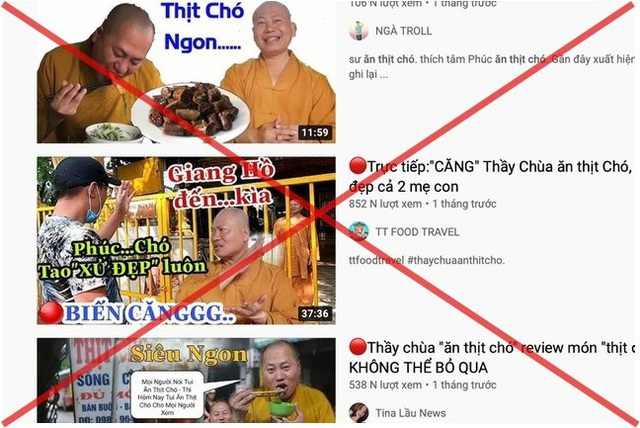

Sự thật bất ngờ về nhân vật "thầy chùa ăn thịt chó" xuất hiện trên Youtube
lebv - ngày 26/06/2021
Giả mạo là tu sĩ Phật giáo, ông Phúc phát ngôn trái với truyền thống Phật giáo Việt Nam và ăn thịt để các Youtube quay phim, đăng tải trên mạng xã hội gây bức xúc dư luận.
Ban trị sự Giáo hội Phật giáo (GHPG) Việt Nam huyện Củ Chi vừa có văn bản gửi Ban trị sự GHPG Việt Nam TPHCM về việc một số kênh Youtube đăng tải hàng loạt clip "thầy chùa ăn thịt chó" xảy ra trên địa bàn.
Ban trị sự Giáo hội GHPG Việt Nam huyện Củ Chi xác định, người mặc áo tu sĩ Phật giáo có những phát ngôn trái với truyền thống Phật giáo Việt Nam, xúc phạm lãnh đạo GHPG Việt Nam trong các clip được lan truyền là ông Nguyễn Minh Phúc, ngụ ấp Láng Cát, xã Tân Phú Trung, huyện Củ Chi.
Hành vi của ông Phúc đã gây ra hậu quả nghiêm trọng, làm cho không ít Phật tử Việt Nam trong nước cũng như ở nước ngoài ngộ nhận về GHPG Việt Nam.
Sau khi hàng loạt clip về ông Phúc được đăng trên Youtube, ngày 2/2, UBND huyện Củ Chi triệu tập cuộc họp với nhiều đơn vị tham gia, trong đó có Ban trị sự GHPG Việt Nam huyện Củ Chi.
Kết quả của phiên họp này xác định, địa chỉ nhà số 174/13A ấp Láng Cát, xã Tân Phú Trung là địa chỉ nhà để ở, không phải là cơ sở thờ tự tôn giáo, không có cơ sở gọi là Chùa Hoằng Pháp Trung ương.
Địa chỉ này trước đây từng có đăng ký thành lập 6 doanh nghiệp do ông Nguyễn Minh Phúc làm người đại diện pháp luật nhưng không hoạt động và Sở kế hoạch và Đầu tư TPHCM đã có quyết định thu hồi tất cả giấy phép thành lập doanh nghiệp tại địa chỉ này.
Các loại giấy tờ chứng minh là tu sĩ, các quyết định bổ nhiệm do Hội đồng trị sự Trung ương GHPG Việt Nam cấp cho ông Nguyễn Minh Phúc đều do ông Phúc tự làm giả mạo.
Ngoài ra, các phát ngôn của ông Nguyễn Minh Phúc trên mạng xã hội là trái với truyền thống của GHPG Việt Nam và làm ảnh hưởng rất nghiêm trọng đến thanh danh của GHPG Việt Nam.
Chính quyền huyện Củ Chi yêu cầu ông Nguyễn Minh Phúc tự tháo dỡ các bảng hiệu treo tại nhà tự xưng là Chùa Hoằng Pháp Trung ương; di đời tất cả các tượng Phật trưng bày tại đây.
Nghiêm cấm triệt để các kênh Youtube đến nhà ông Phúc để ghi hình, đăng thông tin những hoạt động hoặc những phát ngôn của ông này.
UBND huyện Củ Chi yêu cầu ông Phúc chấm dứt ngay những phát ngôn trái với đạo đức xã hội, trái với truyền thống của GHPG Việt Nam, nghiêm chỉnh chấp hành các quy định pháp luật nhà nước, tôn trọng đúng truyền thống Phật giáo.
Quá thời hạn cho phép mà ông Phúc không chấp hành thì lực lượng chức năng sẽ có biện pháp xử lý hoặc cưỡng chế.
Bên cạnh đó, Ban trị sự Giáo hội GHPG Việt Nam huyện Củ Chi đề nghị Ban trị sự Giáo hội GHPG Việt Nam TPHCM có công văn yêu cầu Công an thành phố, Sở Thông tin và Truyền thông thành phố xử lý các kênh Youtube đã đăng tải các clip phát ngôn trái với truyền thống Phật giáo, xuyên tạc Phật giáo của ông Phúc. Tất cả các clip này phải tháo gỡ khỏi các trang Youtube.
Nguồn: Dân trí
Tin Xem Nhiều
- >> Kinh hoàng vụ bầy chó dữ cắn chết người phụ nữ đang đi đường
- >> Chú chó Shiba bán khoai lang nướng từng gây bão MXH thế giới đã qua đời
- >> Cô gái bật khóc nức nở khi nhìn thấy hình ảnh chú chó cưng đã qua đời xuất hiện giữa trời mây
- >> Wasao - chú chó lông dài nổi tiếng, từng là đại sứ du lịch Nhật Bản, trưởng ga tàu đã qua đời ở tuổi 13
- >> Chú chó du lịch khắp các bãi biển miền Nam
- >> Bất ngờ với những lợi ích tuyệt vời của việc nuôi chó